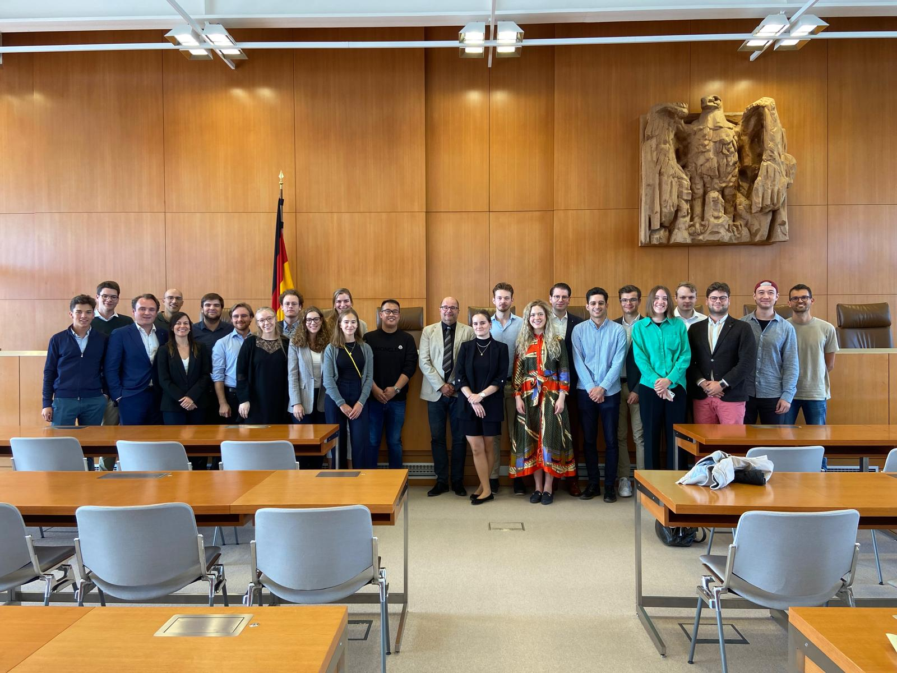

Phi Delta Phi – Hanno Kube Inn Heidelberg e.V.
Willkommen beim Hanno Kube Inn Heidelberg e.V. (vormals Paul Kirchhof Inn), dem Heidelberger Chapter der 1869 an der University of Michigan gegründeten internationalen Juristenvereinigung Phi Delta Phi.
Als überparteiliche und konfessionell ungebundene akademische Gesellschaft verbinden wir engagierte Studierende, Promovierende, Referendarinnen und Referendare sowie Alumni der Rechtswissenschaft. Unser Ziel ist die Förderung des rechtswissenschaftlichen Diskurses, der Berufsethik und des ehrenamtlichen Engagements in Heidelberg.
Gegründet 1869 · Seit 2014 in Heidelberg
Überblick
Direkter Einstieg in die Bereiche des Hanno Kube InnÜber uns & Drei Säulen
Selbstverständnis von Phi Delta Phi und unsere drei Tätigkeitsbereiche in Heidelberg: Interna, Wissenschaft und das Heidelberger Schulprojekt.
Namenspate Prof. Dr. Hanno Kube
Informationen über unseren Namenspaten Prof. Dr. Hanno Kube, LL.M. (Cornell) sowie die Geschichte des Inns seit der Gründung 2014 unter Prof. Dr. Paul Kirchhof.
Veranstaltungen & Archiv
Jahresfeiern (u. a. mit Prof. Dr. von Danwitz und Prof. Dr. Wolfrum), Workshops mit CMS und Gleiss Lutz, Exkursionen zum Bundesverfassungsgericht sowie unsere Veranstaltungs-Chronik.
Vorstand & Vorstands-Chronik
Der amtierende Vorstand (Magister Benedikt Meier und Vice Magister Nicolas Perez) sowie die vollständige Vorstands-Chronik aller Amtsjahre seit 2014/2015.
Mitgliedschaft & Bewerbung
Voraussetzungen für die Aufnahme in das Hanno Kube Inn und der Ablauf vom ersten Kennenlernen bis zur feierlichen Initiation.
Kontakt & Impressum
Postanschrift am Institut für Finanz- und Steuerrecht in Heidelberg, direkter E-Mail-Kontakt (mail@phideltaphi-heidelberg.de) sowie rechtliche Hinweise.
Einblicke in das Vereinsleben
Festakte, Aufnahmezeremonien und Exkursionen

